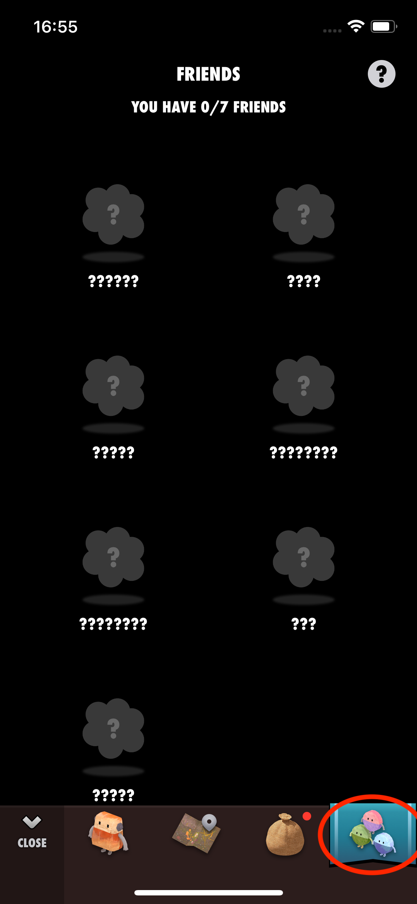

If your mission reward is a 6th friend, it will only appear on the Friends screen first. And you have to replace it with another friend on the screen.
(Up to five friends can simultaneously appear on the main screen.)
Friends Screen:

If the friend you were supposed to get doesn't show up on the Friends screen, there might have been an issue with the mission completion. In that case, you'll need to try the mission again.
We recommend you open the Health app and check the data source settings for the required values, such as steps. Other apps may have written new values, and the result numbers might have changed.